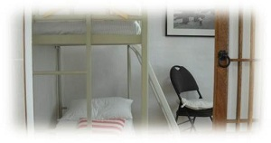

¤ 예약 방법
요안도라 예약의 가장 빠른 방법은
인터넷 전화 070.4529.8743으로 직접 통화하시거나 문자를 남기시는 것입니다.
인터넷 전화라 시외전화 요금이 부과되지 않습니다.
¤ 요금
(이후 요금입니다)
바깥채 전체를 렌트하는 것입니다.
방 3개에 방마다 2층 침대 1개씩이 놓여 있어서,
2명이 넓고 쾌적하게 머무를 수 있습니다.
1인 40,000원
2인 60,000원
3인 80,000원
4인 100,000원
5인 120,000원
6인 140,000원
6인 이상이 머무르게 되면 2층 침대가 이닌 방바닥에 주무시거나
앞뜰에 텐트를 치고 주무실 수 있습니다.
침낭이나 텐트는 직접 가져오셔야 합니다.
이 경우 숙박 요금은 저희와 별도로 상의해 주세요.